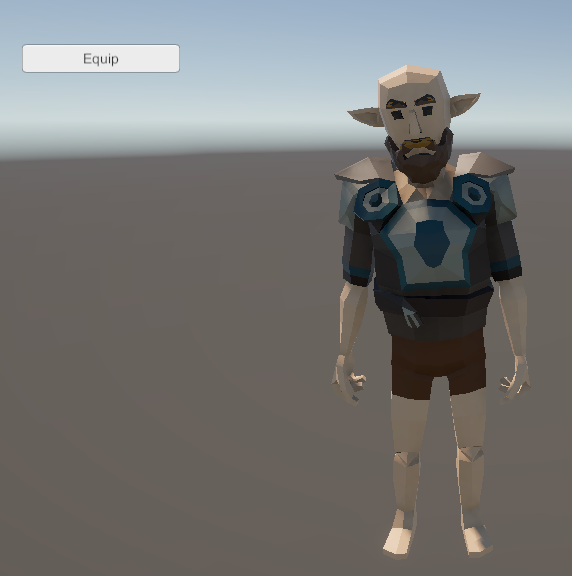
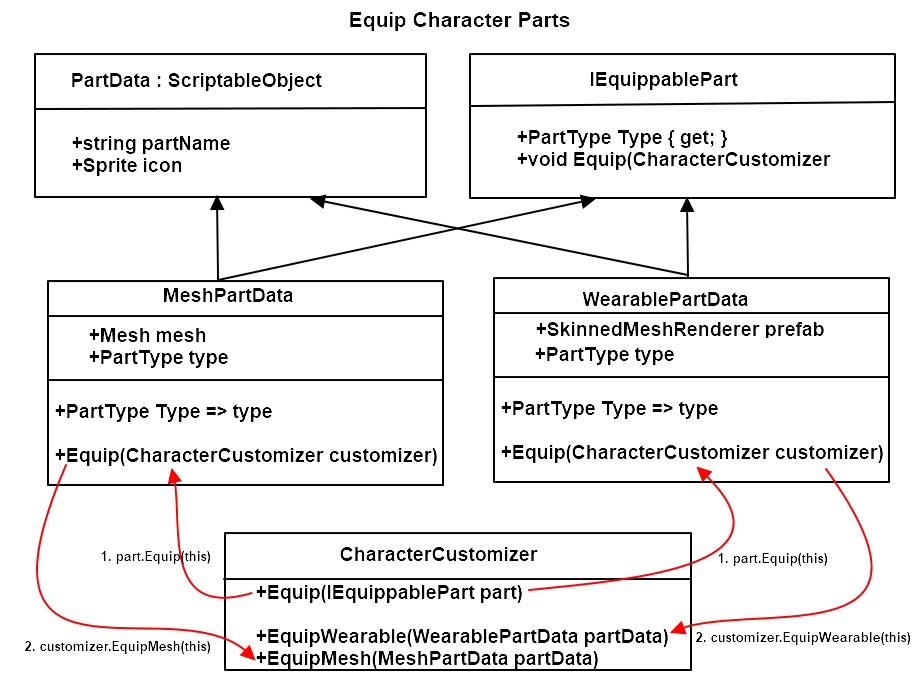
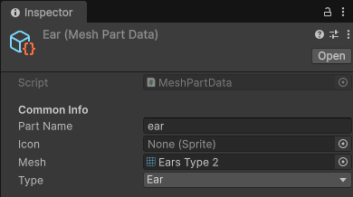
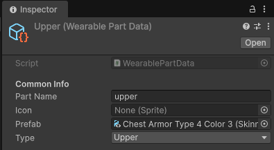

| 첫번째, Change Parts에서는 리소스 설정 및 복장을 착용하는 간단한 코드, 두번째, Change Parts2에서는 enum을 하나로 합치되, 카테고리 필드를 추가해서 착용형인지 메쉬형인지 구분하는 방식입니다. 이번에 사용할 방식은, 인터페이스/추상화 활용 방식입니다. PartCategory를 사용하지 않고, 인터페이스 기반으로 공통 처리하는 방법입니다. 실행화면입니다.   주요 클래스의 특징은 다음과 같습니다. IEquippablePart: 장착 가능한 아이템의 추상 인터페이스입니다. Equip() 메서드를 통해 CharacterCustomizer에게 자신을 어떻게 장착할지 명령합니다. PartData(Abstract): 모든 파츠의 기본 데이터를 담는 ScriptableObject입니다. UI용 이름과 아이콘을 가집니다. MeshPartData: 단순 메쉬 교체형(귀, 머리 등) 파츠입니다. sharedMesh를 교체하는 로직을 가집니다. WearablePartData: 의상형(상체, 하체 등) 파츠입니다. 프리팹을 생성하고 본(Bone) 정보를 동기화하는 로직을 가집니다. CharacterCustomizer: 실제 캐릭터의 SkinnedMeshRenderer들을 관리하고, 실질적인 메쉬 할당 및 인스턴스화를 수행하는 Context 역할입니다. 이 구조는 새로운 장착 타입(예: 이펙트 파츠, 무기 등)이 필요하면 IEquippablePart를 상속받는 클래스만 추가하면 CharacterCustomizer의 기존 코드를 거의 수정하지 않고 확장할 수 있습니다.ScriptableObject [CreateAssetMenu(menuName = "Character/Part/Mesh")]로 ear 생성  ScriptableObject [CreateAssetMenu(menuName = "Character/Part/Wearable")]로 upper 생성  PartType.cs public enum PartType
{ // Wearable Upper, Pants, Gloves, Shoes, // Mesh Ear, Hair, Face, Tail } PartData.cs using UnityEngine;
public abstract class PartData : ScriptableObject { [Header("Common Info")] public string partName; // 파츠 이름 public Sprite icon; // UI 아이콘 } IEquippablePart.cs public interface IEquippablePart
{ PartType Type { get; } void Equip(CharacterCustomizer customizer); } MeshPartData.cs using UnityEngine;
[CreateAssetMenu(menuName = "Character/Part/Mesh")] public class MeshPartData : PartData, IEquippablePart { public Mesh mesh; public PartType type; // Ear, Hair, Face, Tail 등 public PartType Type => type; public void Equip(CharacterCustomizer customizer) { customizer.EquipMesh(this); } } WearablePartData.cs using UnityEngine;
[CreateAssetMenu(menuName = "Character/Part/Wearable")] public class WearablePartData : PartData, IEquippablePart { public SkinnedMeshRenderer prefab; // Upper, Pants, Gloves, Shoes 등 public PartType type; // 인스펙터에서 지정 public PartType Type => type; // 인터페이스 구현 public void Equip(CharacterCustomizer customizer) { customizer.EquipWearable(this); } } CharacterCustomizer.cs using System.Collections.Generic;
using UnityEngine; public class CharacterCustomizer : MonoBehaviour { [Header("Base Character")] [SerializeField] private SkinnedMeshRenderer baseMeshRenderer; [Header("Mesh Swap Renderers")] [SerializeField] private SkinnedMeshRenderer earRenderer; [SerializeField] private SkinnedMeshRenderer hairRenderer; [SerializeField] private SkinnedMeshRenderer faceRenderer; [SerializeField] private SkinnedMeshRenderer tailRenderer; // 현재 장착된 착용형 파츠 관리 private Dictionary<PartType, SkinnedMeshRenderer> equippedWearables = new(); // 공통 Equip 메서드 public void Equip(IEquippablePart part) { if (part == null) return; part.Equip(this); } #region 내부 장착 로직 (Wearable / Mesh) // 착용형 파츠 장착 public void EquipWearable(WearablePartData partData) { if (partData == null || partData.prefab == null) return; if (equippedWearables.TryGetValue(partData.Type, out var oldPart)) { Destroy(oldPart.gameObject); } var newPart = Instantiate(partData.prefab, transform); newPart.rootBone = baseMeshRenderer.rootBone; newPart.bones = baseMeshRenderer.bones; equippedWearables[partData.Type] = newPart; } // 메쉬 교체형 파츠 장착 public void EquipMesh(MeshPartData partData) { if (partData == null || partData.mesh == null) return; SkinnedMeshRenderer targetRenderer = partData.Type switch { PartType.Ear => earRenderer, PartType.Hair => hairRenderer, PartType.Face => faceRenderer, PartType.Tail => tailRenderer, _ => null }; if (targetRenderer != null) { targetRenderer.sharedMesh = partData.mesh; } } #endregion } UIEquipButton.cs using UnityEngine;
using UnityEngine.UI; public class UIEquipButton : MonoBehaviour { [Header("Target Customizer")] [SerializeField] private CharacterCustomizer customizer; [Header("Part to Equip: wear")] [SerializeField] private PartData upperPartData; [Header("Part to Equip: attach")] [SerializeField] private PartData earPartData; [Header("UI Button")] [SerializeField] private Button equipButton; private void Awake() { if (equipButton != null) { equipButton.onClick.AddListener(OnEquipClicked); } } private void OnEquipClicked() { IEquippablePart equippablePart = upperPartData as IEquippablePart; if (customizer != null && equippablePart != null) customizer.Equip(equippablePart); equippablePart = earPartData as IEquippablePart; if (customizer != null && equippablePart != null) customizer.Equip(equippablePart); } } 소스: PartType.cs PartData.cs IEquippablePart.cs MeshPartData.cs WearablePartData.cs CharacterCustomizer.cs UIEquipButton.cs |